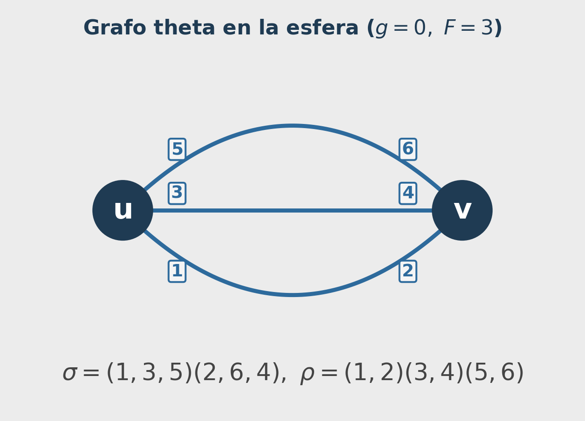
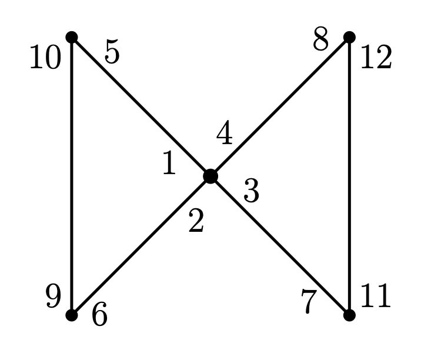
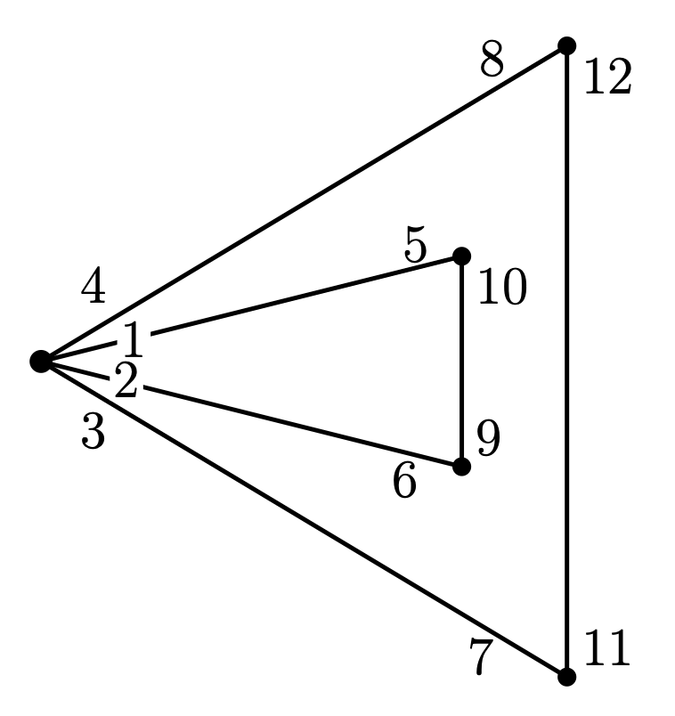

7. Polinomio de Bollobás-Riordan
Definición, cálculo y optimización en Sage
Este capítulo está dedicado al polinomio de Bollobás-Riordan, su interpretación topológica y su cálculo explícito con Sage.
Motivación
El polinomio de Tutte clásico es un invariante potente para grafos abstractos, pero no detecta la topología del encaje: dos ribbon graphs con el mismo grafo subyacente y el mismo polinomio de Tutte pueden encajarse en superficies de géneros distintos.
El polinomio de Bollobás-Riordan subsana esta limitación. Introduce una variable \(z\) cuyo exponente registra \(\gamma(F)=k(F)-f(F)+n(F)\); en el caso orientable, \(\gamma(F)=2g(F)\) (doble del género). Así, para grafos planos la variable \(z\) no aparece, mientras que para encajes en el toro o superficies de género mayor sí lo hace.
Definición formal
Para un subgrafo generador \(F \subseteq G\) (mismo conjunto de vértices, subconjunto arbitrario de aristas), sean \(k(F)\), \(e(F)\), \(v(F)\), \(f(F)\) y \(g(F)\) su número de componentes conexas, aristas, vértices, caras (componentes de frontera de la cinta) y género, respectivamente. Definimos \(r(F) = v(F) - k(F)\) y \(n(F) = e(F) - r(F)\).
El polinomio de Bollobás-Riordan de un grafo \(G\) encajado celularmente en una superficie orientable es
\[ R(G;x,y,z) = \sum_{F \subseteq G} (x-1)^{r(G)-r(F)}\,y^{n(F)}\,z^{k(F)-f(F)+n(F)}, \]
donde la suma recorre todos los subgrafos generadores \(F\) de \(G\).
En este capítulo usamos además la notación computacional \(A \subseteq E\), con \(F=(V,A)\), equivalente a la definición anterior. Como \(F\) es spanning, siempre conserva todos los vértices de \(G\) y por eso puede tener vértices aislados.
En esa notación:
- \(r(G)-r(F)=k(F)-k(G)\) (porque \(v(F)=v(G)\))
- \(n(F)=e(F)-r(F)=|A|-v(F)+k(F)\)
- \(k(F)-f(F)+n(F)=\gamma(F)\), y en superficies orientables \(\gamma(F)=2g(F)\)
Interpretación de los exponentes
| Exponente | Significado |
|---|---|
| \(r(G)-r(F)\) | Exponente de \((x-1)\); mide cuánto cae el rango al pasar de \(G\) a \(F\) |
| \(n(F)\) | Exponente de \(y\); nulidad ciclomática de \(F\) |
| \(k(F)-f(F)+n(F)\) | Exponente de \(z\); coincide con \(\gamma(F)\), que en el caso orientable vale \(2g(F)\) |
Cómo se implementa en Sage (por exponente)
Buena parte de las piezas ya se construyó en capítulos anteriores (permutaciones \(\sigma\), \(\rho\) y la permutación de caras \(\varphi\)). Aquí solo se integran para evaluar, subgrafo por subgrafo:
v(F): número de ciclos desigma.cycle_tuples(singletons=True).e(F): número de aristas activas en el subconjunto \(A\).k(F): componentes conexas del subgrafo \((V,A)\) con Union-Find sobre todos los vértices.f(F): ciclos de \(\varphi_A=\rho_A\circ\sigma_A\) en los darts activos, más los vértices aislados.r(F)=v(F)-k(F)yn(F)=e(F)-r(F).- Exponentes del monomio: \((x-1)^{r(G)-r(F)}y^{n(F)}z^{k(F)-f(F)+n(F)}\).
Evaluación exacta por spanning subgraph
La siguiente celda muestra explícitamente la contribución de cada \(F=(V,A)\) para el theta en el toro. En la columna aislados se ve cuándo aparecen vértices aislados.
Implementación en Sage
La fórmula de suma sobre subgrafos es directamente computable. Iteramos sobre los \(2^m\) subconjuntos de aristas y acumulamos cada término:
Los resultados esperados son:
| Ribbon graph | Género | \(R(G;\, x, y, z)\) |
|---|---|---|
| Toro (1 vértice, 2 loops) | 1 | \(1 + 2y + y^2z^2\) |
| Loop en la esfera | 0 | \(1 + y\) |
| Grafo theta en la esfera | 0 | \(x + 2 + 3y + y^2\) |
| Grafo theta en el toro | 1 | \(x + 2 + 3y + y^2z^2\) |
Ejemplo comparativo: grafo theta en esfera y toro
Con el mismo grafo abstracto theta (dos vértices y tres aristas paralelas), dos encajes celulares producen polinomios distintos:
- En la esfera: \(\sigma=(1,3,5)(2,6,4)\), \(\rho=(1,2)(3,4)(5,6)\) \[ R_{\text{theta, esfera}}(x,y,z)=x+2+3y+y^2. \]
- En el toro: \(\sigma=(1,3,5)(2,4,6)\), \(\rho=(1,2)(3,4)(5,6)\) \[ R_{\text{theta, toro}}(x,y,z)=x+2+3y+y^2z^2. \]


Compara los dos últimos renglones de la tabla: el grafo theta en la esfera da \(x + 2 + 3y + y^2\) (sin \(z\)), mientras que el mismo grafo theta encajado en el toro da \(x + 2 + 3y + y^2 z^2\). El único cambio es \(y^2 \to y^2 z^2\), lo que refleja que el subgrafo completo (todas las aristas) tiene género 0 en la esfera y género 1 en el toro.
Para grafos planarmente encajados, \(\gamma(A) = 0\) para todo \(A\), de modo que \(z\) nunca aparece y \(R(G; x, y, 1) = T(G; x, y+1)\) recupera el polinomio de Tutte clásico.
Evaluaciones especiales:
- \(R(G; 1, 1, 1) = 2^m\) cuenta todos los subconjuntos de aristas.
- Para encajes en la esfera, \(z\) no aparece y \(R(G; x, y, 1) = T(G; x, y+1)\) recupera Tutte.
- El coeficiente \([z^{2g}]R(G; 1, 1, z)\) cuenta subgrafos de género \(g\) (en el caso orientable, los exponentes impares se anulan).
La función bollobas_riordan itera sobre los \(2^m\) subconjuntos de aristas. Para cada subconjunto \(A\):
- construir \(D_A\): \(O(|A|)\)
- calcular \(k(A)\) con Union-Find: \(O(m\,\alpha(n))\)
- construir \(\sigma_A\) siguiendo \(\sigma\) dart a dart: \(O(|D_A| \cdot n)\) en el peor caso
- contar ciclos de \(\varphi_A\): \(O(|D_A|)\)
El coste total es \(O(2^m \cdot mn)\), exponencial en el número de aristas.
| \(m\) | \(2^m\) | Tiempo orientativo |
|---|---|---|
| 6 | 64 | instantáneo |
| 12 | 4 096 | < 1 s |
| 20 | 1 048 576 | minutos |
| 30 | \(\approx 10^9\) | horas |
Esto es esperable: calcular el polinomio de Tutte clásico ya es #P-difícil1 para grafos generales [Jaeger 1990], y el polinomio de Bollobás-Riordan extiende ese problema. La implementación anterior es clara y correcta para los ejemplos del curso (\(m \leq 6\)); la siguiente sección presenta una versión optimizada que reduce el factor constante.
Implementación optimizada
El cuello de botella real no son las llamadas a sigma(d) ni las operaciones de set, sino la aritmética de polinomios de Sage dentro del bucle:
result += (x-1)^(kA - kG) * y^(len(A) - n + kA) * z^gammaPara cada uno de los \(2^m\) subconjuntos esto ejecuta 3–4 operaciones sobre objetos MPolynomial de Sage (exponenciación, multiplicación, suma), cada una con un coste de decenas de microsegundos frente al microsegundo o menos de una operación Python pura. Con \(2^6 = 64\) subconjuntos, eso supone ya ~1–2 ms solo en esta línea.
La solución es sacar la aritmética de Sage fuera del bucle: acumular coeficientes enteros en un diccionario Python durante el bucle, y construir el polinomio una sola vez al final. El término \((x-1)^k\) se expande con el teorema del binomio usando aritmética entera pura:
\[ (x-1)^k = \sum_{j=0}^{k} \binom{k}{j}(-1)^{k-j}\, x^j \]
La diferencia clave:
| Aspecto | bollobas_riordan (original) |
bollobas_riordan_rapido |
|---|---|---|
| Aritmética de polinomios | Dentro del bucle (\(2^m\) veces) | Fuera del bucle (una sola vez) |
| Tipo de acumulación | Suma de objetos MPolynomial |
Suma de enteros Python en un dict |
| Expansión de \((x-1)^k\) | Sage la calcula implícitamente | Tabla de binomios precalculada |
| Robustez numérica | Puede ocultar errores de conteo en exponentes | Verifica que \(\gamma(A)=k-f+n\) sea par y no negativa |
| Vértices aislados | Recorre ciclos con any(...) en cada subconjunto |
Marcado explícito por vértice activo (bytearray) |
| Construcción final | Incremental (costosa) | Un único sum(...) al terminar |
El polinomio como invariante de ribbon graphs
Un resultado fundamental es que sistemas de rotación equivalentes tienen el mismo polinomio de Bollobás-Riordan. Esto se sigue de que la equivalencia es un isomorfismo de ribbon graphs: si \(\varphi \sigma_1 \varphi^{-1} = \sigma_2\) y \(\varphi \rho \varphi^{-1} = \rho\), entonces \(\varphi\) permuta los subconjuntos de aristas biyectivamente preservando todos los invariantes del que depende \(R\): \(k(A)\), \(\gamma(A)\) y \(\mathrm{bc}(A)\).
En el capítulo 5 verificamos que el moño y el ojo son ribbon graphs equivalentes. Por este resultado, sus polinomios de Bollobás-Riordan deben ser iguales. El ejercicio 1 propone verificarlo computacionalmente.
Ejercicios
Usa la función bollobas_riordan para calcular \(R(\text{moño}; x, y, z)\) y \(R(\text{ojo}; x, y, z)\) con los datos:
\[\rho = (1,5)(4,8)(2,6)(3,7)(9,10)(11,12)\] \[\sigma_1=(1,2,3,4)(5,10)(6,9)(8,12)(7,11), \quad \sigma_2=(1,4,3,2)(5,10)(6,9)(8,12)(7,11)\]


- Verifica que \(R(\sigma_1, \rho) = R(\sigma_2, \rho)\) (ambos son equivalentes, luego el polinomio debe coincidir).
- ¿Aparece \(z\) en el polinomio? ¿Qué dice eso del género del encaje?
- Compara con \(R\) del toro de 1 vértice y 2 loops: ¿son iguales o distintos los polinomios?
El grafo theta son dos vértices conectados por tres aristas paralelas. Tiene dos encajes celulares cualitativamente distintos:
- En la esfera: \(\sigma_{\mathrm{esf}} = (1,3,5)(2,6,4)\), \(\rho=(1,2)(3,4)(5,6)\) — tres caras, género 0
- En el toro: \(\sigma_{\mathrm{tor}} = (1,3,5)(2,4,6)\), \(\rho=(1,2)(3,4)(5,6)\) — una cara, género 1
- Calcula el polinomio de Bollobás-Riordan de cada encaje.
- ¿En qué término difieren? ¿Puede el polinomio de Tutte distinguirlos?
- Evalúa ambos polinomios en \(z=0\) y compara con el resultado esperado del caso planar.
Resumen
- El polinomio de Bollobás-Riordan generaliza el de Tutte: la variable \(z\) detecta \(\gamma(A)=k(A)-f(A)+n(A)\) (que en orientables coincide con \(2g(A)\)) y está ausente en encajes planos.
- La fórmula de suma sobre subgrafos es directamente computable en Sage iterando sobre los \(2^m\) subconjuntos de aristas.
- El polinomio es un invariante de ribbon graphs: sistemas de rotación equivalentes dan el mismo polinomio.
- El caso completo del diagrama de Heegaard de la esfera de Poincaré (\(E=24\)) se presenta en el capítulo 8 con validación reproducible y polinomio explícito.
El polinomio de Bollobás-Riordan es un área activa de investigación con conexiones a teoría de nudos (polinomios de nudos tipo HOMFLY-PT), física matemática (modelos de Potts en superficies), y combinatoria enumerativa de mapas.
Referencias
- Bollobás, B., & Riordan, O. (2002). A polynomial of graphs on surfaces. Mathematische Annalen, 323(1), 81–96.
- Chmutov, S. (2009). Generalized duality for graphs on surfaces and the signed Bollobás–Riordan polynomial. Journal of Combinatorial Theory, Series B, 99(3), 617–638.
- Ellis-Monaghan, J. A., & Moffatt, I. (2013). Graphs on Surfaces: Dualities, Polynomials, and Knots. Springer.
- Jaeger, F., Vertigan, D. L., & Welsh, D. J. A. (1990). On the computational complexity of the Jones and Tutte polynomials. Mathematical Proceedings of the Cambridge Philosophical Society, 108(1), 35–53.
- SageMath – Ribbon Graphs
Notas
La clase de complejidad #P (Sharp-P) agrupa los problemas de conteo asociados a problemas de decisión en NP. Un problema es #P-difícil si calcular su solución es al menos tan complejo como contar las soluciones de cualquier problema en NP. En la práctica, implica que el tiempo de cómputo crece exponencialmente con el tamaño de la entrada y no se conocen algoritmos eficientes.↩︎